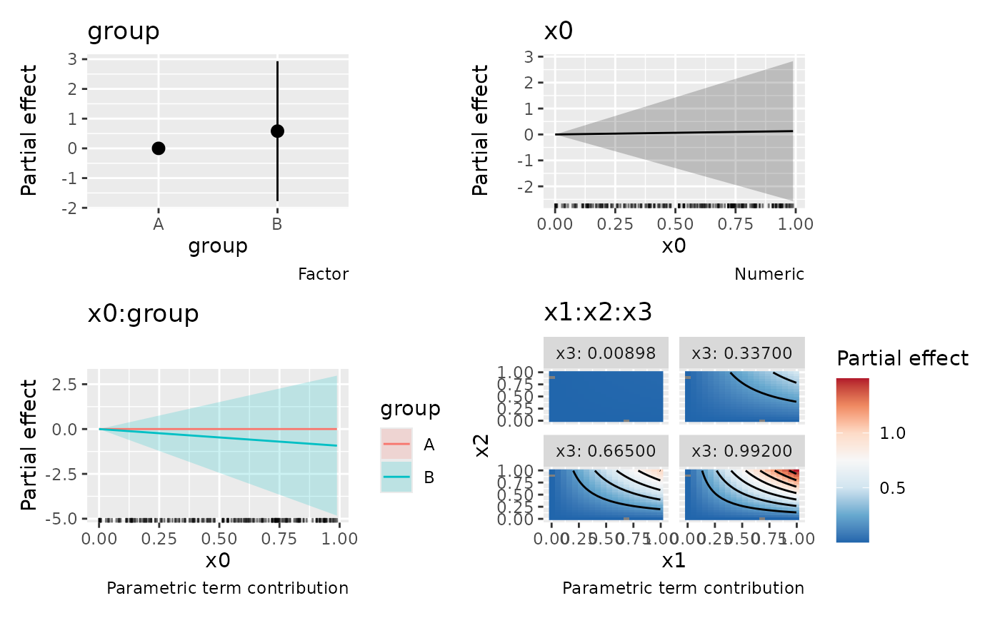
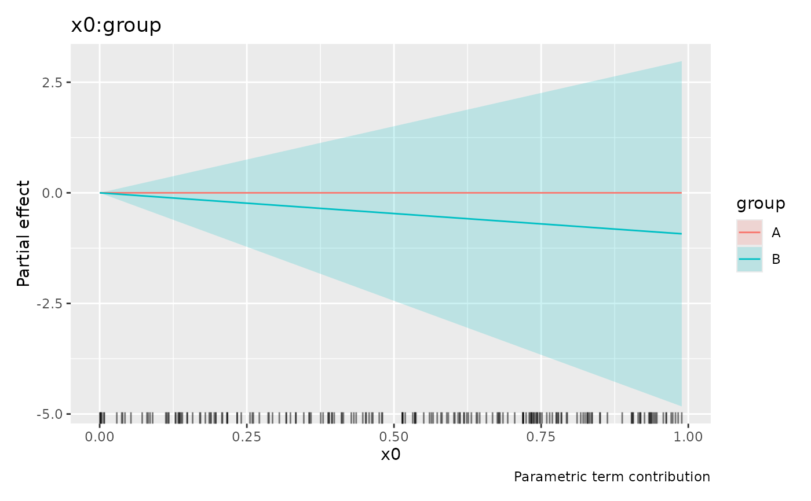

Estimated values for parametric model terms
Usage
parametric_effects(object, ...)
# S3 method for class 'gam'
parametric_effects(
object,
terms = NULL,
data = NULL,
unconditional = FALSE,
unnest = TRUE,
ci_level = 0.95,
envir = NULL,
transform = FALSE,
n = 100,
n_2d = 50,
n_3d = 16,
n_4d = 4,
dist = 0.1,
...
)Arguments
- object
a fitted model object.
- ...
arguments passed to other methods.
- terms
character; which model parametric terms should be drawn? The Default of
NULLwill plot all parametric terms that can be drawn.- data
an optional data frame containing raw model covariates at which to evaluate parametric effects. By default, stored raw columns are used; missing raw inputs are recovered from the fitting data when possible.
- unconditional
logical; should confidence intervals include the uncertainty due to smoothness selection? If
TRUE, the corrected Bayesian covariance matrix will be used.- unnest
logical; unnest the parametric effect objects?
- ci_level
numeric; the coverage required for the confidence interval. Currently ignored.
- envir
an optional environment for local functions and constants, and for recovering fitting data when required raw columns are not stored in the model. Defaults to the model's evaluation environment.
- transform
logical; if
TRUE, the parametric effect will be plotted on its transformed scale which will result in the effect being a straight line. If FALSE, the effect will be plotted against the raw data (i.e. forlog10(x), orpoly(z), the x-axis of the plot will bexorzrespectively.)- n, n_2d, n_3d, n_4d
Grid resolutions for multivariate parametric terms. Curves use
n = 100; the first two numeric surface axes usen_2d = 50. The third dimension of a three-variable term usesn_3d = 16; dimensions beyond the second of higher-dimensional terms usen_4d = 4.NULLusesninstead. Factors retain their levels. Ignored whendatais supplied. Single-variable terms retain their observed evaluation values.- dist
Non-negative distance for masking surface plots far from observed covariates, as in
draw.gam(). Applied to the first two numeric axes when drawing; returned estimates are not masked. Use zero to disable masking.
Value
A tibble of class parametric_effects, with .term, .type,
.partial and .se. Single-variable terms retain .value or .level;
multivariate terms contain their raw covariate columns. Names conflicting
with reserved columns are repaired with numeric suffixes. The term_info
attribute records multivariate column mappings, plotting order, factor
levels and observation data. With unnest = FALSE, estimates and
covariates are nested in a data list column.
Details
Each estimate is the contribution of one formula term to its linear predictor. Intercepts, main effects and other terms are not added to an interaction. Components follow the model's contrast coding: with treatment contrasts, a numeric-by-factor interaction represents a departure from the reference-level slope, rather than a complete slope for each level.
A multi-column term such as poly(x, 3) is one component, whereas x and
I(x^2) remain separate components. Multivariate terms are evaluated against
their raw covariates; transform = TRUE is not supported for these terms.
Other covariates in generated prediction data are held at typical values
solely to evaluate the model matrix; their contributions are not included.
The drawing method uses the first two numeric covariates for surface axes, grouping curves by the first factor when there is only one numeric covariate. Factor-only terms use grouped points and intervals. Remaining covariates define facets: one wraps, two or more use the first as rows and the rest as columns. Formula order is retained within numeric and discrete covariates. Logical covariates are discrete. Surface plots show estimates; uncertainty is retained in the returned data rather than drawn as additional surfaces.
Examples
load_mgcv()
d <- data_sim("eg1", n = 200, seed = 42)
d$group <- factor(rep(c("A", "B"), length.out = nrow(d)))
m <- gam(y ~ x0 * group + x1:x2:x3, data = d, method = "REML")
pe <- parametric_effects(m, n_2d = 20, n_3d = 4)
draw(pe)
#> Warning: `stat_contour()`: Zero contours were generated
#> Warning: no non-missing arguments to min; returning Inf
#> Warning: no non-missing arguments to max; returning -Inf

draw(m, parametric = TRUE, terms = "x0:group")
